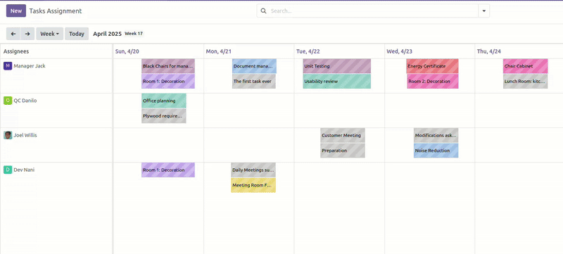
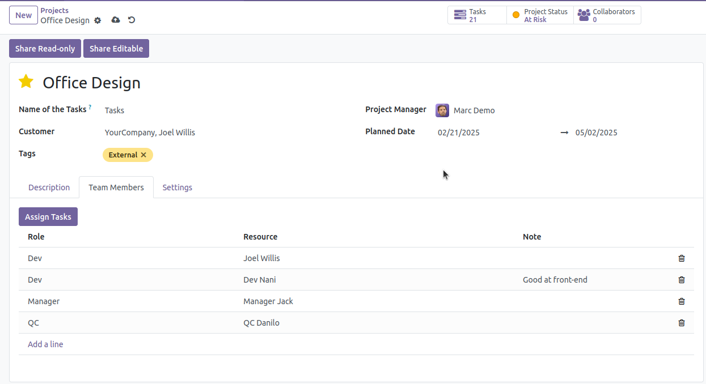
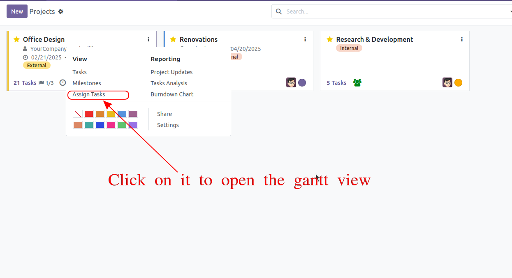
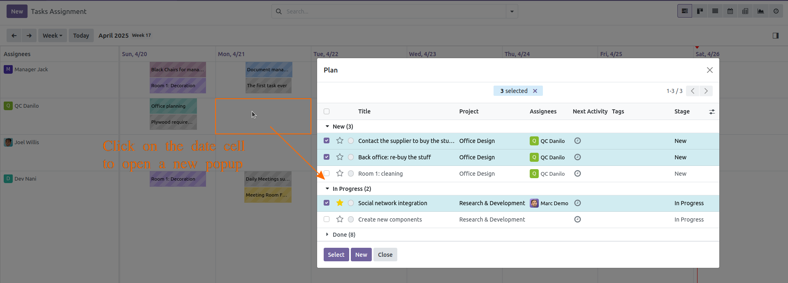

Add team members to your project and assign them tasks on the Gantt view

Using this account: username: demo / password: demo
Add members (user) to the project on its form view.
There is a new tab Team Members

There is a button:
User can also open the gantt view through the Kanban view of Project

On the gantt view, you can assign the tasks to the user by clicking on the date cell.
A pop-up will be opened to let you select the task which are not scheduled yet.

You can select one or more tasks to assign them to the user.
There are many gantt views available in many applications: Task of Project, HR Work Entry, Time off, Event,...